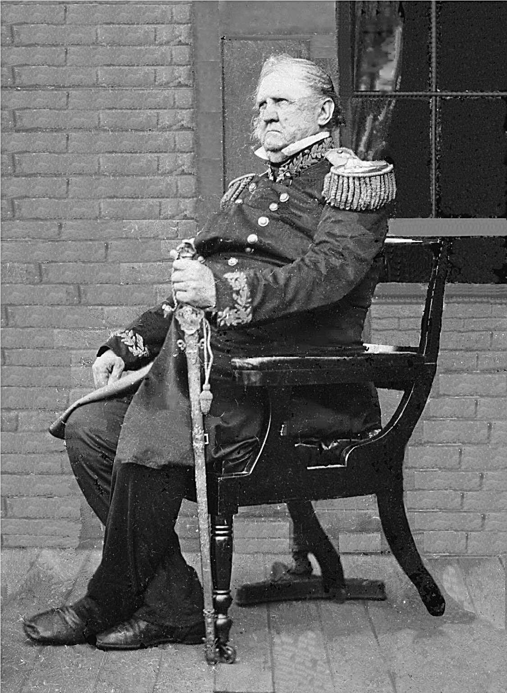
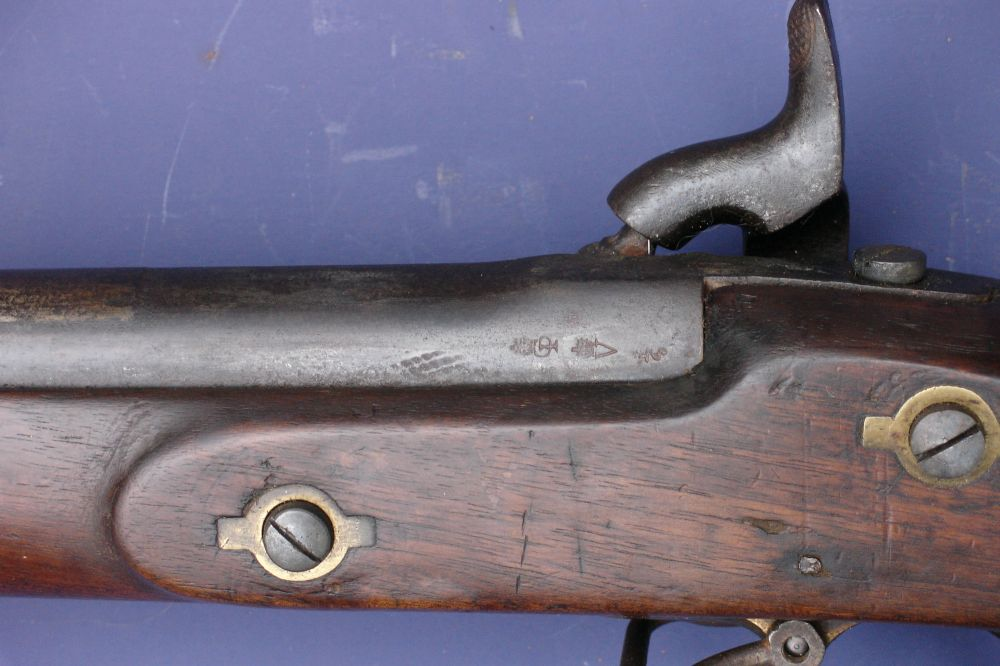
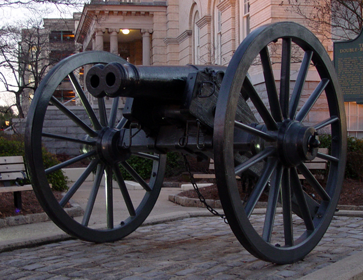
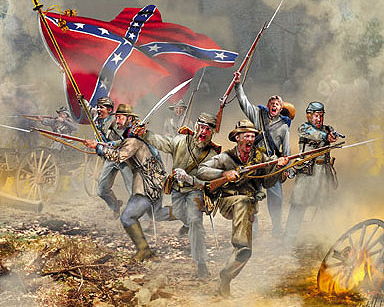

|
Scholars who study the history of the U.S. Military Academy
call the two decades prior to the Civil War the "Golden Age"
of West Point. It was the time when the officer corps of the
army changed from being composed primarily of men who had
been commissioned directly from civilian life or who had
risen from the ranks to one wherein professionally trained
men predominated. Not one of the thirty-seven men who became
general officers between 1802 and 186 was an alumnus of the
Academy, but even as early as 1833 more than half of the
active officers were graduates, and their numbers had
increased to more than 75 percent by 1860 on the eve of the
Civil War.
Building the Armies
When the country divided, 9,103,332 persons among the
nation's total population of 31,443,331 lived in seceded
states. So, too, did the cadet corps and the officer corps
divide into similarly proportionally sized groups. At the
war's outset, seventy-four Southern cadets resigned their
appointments or suffered dismissal for refusing to take a
required oath of allegiance, and all of those subsequently
served in the Confederate army. A few Northerners chose to
side with the South; and a few Southerners remained loyal to
the North. Of the 966 Southern-born West Point alumni who
fought in the Civil War, 39 (14.7 percent) served the
Union.
For a variety of reasons, the South had a keener
appreciation of military professionalism than the North did.
Early in the Civil War the South did a better job than the
North in identifying its more able officers and getting them
sooner into high levels of command. More to the point is
that the South- from the outset-was much more welcoming to
its military professionals and capitalized upon their
talents. Among the Regular Army officers who went to fight
for the South, 64 percent became generals, while less than
30 percent of those Regulars who stayed with the Union did
so.
Virtually none of the non-brevet general-grade officers in
the rather small pre-Civil War army could be expected to
take the field. Winfield Scott, the general in chief, a
Regular Army major general and brevet lieutenant general,
was seventy-five years of age and physically unfit. Brig.
|

Maj. Gen. Winfield Scott's military career
began prior to the War of 1812 and ultimately spanned more than 50 years.
By the time of the Civil War, he was too old and infirm
for field command.
|
Gen. John E. Wool, who was seventy-seven years old, ably
handled an administrative command for a time and was
promoted to major general on May 17, 1862, but diminished
vigor forced him to retire on August 1, 1863.
Seventy-two-year-old Brig. Gen. David E. Twiggs sided with
the Confederacy.
Huge numbers of general- and field-grade officers had to be
appointed from sources other than West Point; the importance
and role played by the volunteer officers cannot be
discounted. To be sure it was politics-and not their
military capacity-that motivated some of their appointments.
But some volunteer officers possessed genuine merit, and
many of them productively strove to improve. Too, West Point
had some meaningful competition as a source of sound formal
military education, most notably from the Virginia Military
Institute and the military college in Charleston, South
Carolina, known as the Citadel.
Nevertheless, West Pointers-many of them still very
young-dominated the key positions; the Civil War was a "West
Pointers War." Some of the Academy men performed poorly;
only a very few proved adequate to the tasks of top command
positions. It was in the lower-level commands and in staff
positions that West Pointers-augmented by the best of the
volunteer officers-truly excelled. Most significant, they
succeeded in molding huge numbers of raw, unmilitary, young
Americans into formidable soldiers, integrating them into
well-functioning armies. The reality was demonstrated:
modern wars can be conducted satisfactorily by armies that
are largely nonprofessional if there exists an adequate
professional core and if there is at least minimally
sufficient time to mobilize and train.
Both sides started off with relative parity in
administrative apparatus for command and control. Both had
little technical information and few military maps. (A major
western campaign in 1862 was conducted by a Confederate
general who had bought his maps in a bookstore.) There was
no staff school and no general-staff system. The Union had
long used a regional military department system, and (with
necessary modifications) this continued in existence
throughout the Civil War. The Confederacy copied the idea;
but, with the passage of time, the Confederate military
department system came to have more impact on strategy than
did the North's geographic arrangement, which remained more
administrative in nature.
An army also needed to be built. At the outbreak of the
Civil War, the U.S. Army mustered just 16,367 men. On April
15, 1861, President Lincoln called up 75,000 militiamen for
three months. Three weeks later by executive fiat he
increased the Regular Army by 22,714 men and the navy by
18,000. Over the next four years, the Union ultimately
mobilized 2.6 million men.
The Confederacy, meanwhile, also mobilizing, had even
farther to go. (It was long believed, due to a misstatement
by Emory Upton in his postwar writings, that only twenty-six
enlisted men from the U.S. Army joined the Confederate
forces. Actually, at least seventy enlisted individuals
changed from North to South early in the war, and the full
number of such deserters eventually approached four
hundred.) The Confederate Congress had authorized the muster
for a period of one year of as many volunteers as President
Davis desired, and on March 6 he called for 100,000. The
Confederacy ultimately mobilized close to 1 million men.
Initially, many recruits flocked to the training camps of
both sides; but two particularly critical periods eventually
rendered reenlistment a vital problem for both sides. First,
early in the war, even before any real fighting had taken
place, because many of the initial enlistments were for very
short periods-usually for three months-the necessity arose
to institute drastic change. Troops thereafter were
typically enlisted for three years or for the war's
duration, whichever came first. Thus, if the war was still
dragging on, sometime in 1864 there would come a crucial
period when vast numbers of soldiers' terms of service were
due to expire. For example, of the 956 Union infantry
regiments on duty at the outset of 1864, 455 were scheduled
to disband during the spring and summer. But both sides
proved able in 1864 to effect a significantly large, though
not total, reenlistment of its veterans.
Civil War Weapons
The nominal standard U.S. rifle at the outbreak of the Civil
War was the .58 caliber muzzle-loaded Model 1855 Percussion
Rifle, manufactured at Harpers Ferry Arsenal between 1857
and 1861. Just slightly more than 7,000 were made, however,
and a large portion of that number were lost, destroyed in a
purposely set fire to prevent their capture by Confederates
who raided the arsenal in April 1861. Also in 1861, the
Springfield Armory began manufacturing the .58 caliber Model
1861 U.S. Percussion Rifle Musket. The armory turned out
more than 250,000 of them, and other contractors produced
more than 450,000. A variation of this design, known as the
"Special Model 1861," was also made, some 100,000 of them by
the Colt Firearms Company and about 80,000 by other
companies.
Both sides used several other makes of rifles, some of them
manufactured in the United States, but the majority were
foreign-made-by far the most popular being the British
Enfield. Each side imported roughly 400,000 of them, made by
|

Like the vast majority of Civil War rifles,
the Enfield was a breech-loading musket fired with the use of a
percussion cap. Even in the hands of a very skilled soldier,
it could only be loaded and fired three times per minute.
|
various private contractors in London and in Birmingham,
England. Most of these pieces conformed to an 1853 pattern,
with occasional modifications. They fired a .77-caliber
smooth-sided minie bullet. Their greatest shortcoming was
that their parts were not interchangeable. Otherwise, they
were equal or superior to the American Springfield, and just
as accurate.
The two most notable innovative features offered by several
other lesser-used pieces were breech-loading and repeating
firing capability. The best-known breech loader was the
repeating Spencer carbine, some 11,400 of which were
acquired by the Union army, and the Sharps single-shot
carbine, of which about 9,000 were purchased by the
Federals. (Carbines are smaller versions of prototype
rifles, although sometimes the rifle itself might not exist.
Carbines were more convenient for the cavalry to use but
were less powerful and therefore shorter in range and too
lightweight for the heavy and rough use of shoulder weapons
made for infantrymen.) The most technically advanced of the
Civil War rifles was the Henry lever-action repeater, of
which 1,731 were purchased for the Union army. Its magazine
held fifteen shots, and an additional round could be loaded
in the chamber.
The Confederacy obtained many of its arms from stores of
military weapons already in the region before the war
commenced; the Southerners seized about 190,000 small arms
from former Federal arsenals. Later, Confederate weaponry
came via capture from Union troops, or manufacture in the
South, or foreign importation. The Fayetteville Armory in
North Carolina, for example, made several thousand copies of
the U.S. Model 1861, at first using parts captured at
Harpers Ferry and later fabricating its own parts. Other
important Confederate factories were the Richmond Armory in
Virginia and the Palmetto Armory in Columbia, South
Carolina. The Southerners engaged in much successful
blockade running. Although frivolous items sometimes took up
precious cargo space, blockade running did meet the
Confederacy's essential needs. The standard Southern weapon
was either the U.S. Rifle Musket models of 1842 or 1855, or
the Rifle Model 1841 with the bore reamed out to .577
caliber.
Both sides experimented. Various special rifles were devised
for use by sharpshooters and snipers. Shotguns were also
fairly commonly used, typically cut down in length. And some
early versions of machine guns were introduced: the
twenty-five-barreled Billinghurst-Requa Volley Gun, the
.78-caliber Ager "Coffee Mill" machine gun, and the Gatling
gun-considered the great missed opportunity of the Civil War
because not until 1866 did the army choose to order any
versions of this weapon, which had been demonstrated as
effective in 1862. Twelve Gatlings were purchased personally
by Maj. Gen. Benjamin F. Butler (the Union general most
interested in and supportive of new weaponry concepts), and,
late in the war, his troops made good use of them. These
guns were little used in the Civil War primarily because few
persons in authority were interested in them, there being
scant understanding of how they could be integrated into the
prevailing tactical theories.
The basic Civil War artillery piece was the "Napoleon," or
Model 1857 gun howitzer, a twelve-pounder smoothbore named
for the then French emperor, Napoleon III. Despite its name,
the piece was not a true howitzer, for it had no chambered
interior and did not arc its shells. A smoothbore cannon of
earlier design, which was also much used in the Civil War
because large numbers existed before the conflict commenced
and because they were highly mobile, was the six-pounder.
Smoothbore pieces, when charged with case (a hollow shell
packed with lead balls and gun powder) or canister
(essentially a very large shotgun shell), were very
effective against infantry at short and medium range.
Despite that, a number of types of rifled artillery pieces
were gradually introduced; infantrymen rightly feared
smoothbores more because rifled artillery had smaller bores
and could not fire large rounds of case or canister-the
special, and deadly, antipersonnel types of short-range
ammunition. Early results with rifled artillery were poor
because bronze guns could not stand the added strain.
Beginning in 1860 a large number of smoothbore pieces were
rendered into rifles by the "James Conversion"-that is, by
cutting spiral grooves into the inside of smoothbore
barrels. This seriously weakened the guns, however, so while
range and accuracy were increased, they tended to burst. The
Union rapidly phased out the use of James Rifles, while
necessity forced the Confederacy to employ them for a longer
time.
Noteworthy and potent new artillery pieces were designed for
the Union by Capt. Thomas J. Rodman and by former captain
Robert P. Parrott. The Rodman gun was a smoothbore, the
Model 1861 Columbiad, cast using a special cooling process.
The Parrott was rifled, the second-most widely used rifled
artillery piece of the Civil War (the most common piece
being the three-inch ordnance rifle). The Parrott was
distinguished by its single wide reinforcing band at the
breech, attached by using a particular metallurgical method
devised by Parrott, an 1844 graduate of West Point. Parrott
guns ranged in caliber from ten-pounders to three
hundred-pounders, and although many problems were
encountered with them, they were regarded as tough,
versatile, practical, and relatively cheap and easy to
produce. While the Confederacy did manage to produce some of
its own artillery-they even cast a couple of Rodmans late in
the war-the bulk of Southern artillery was obtained either
through seizure at the outset or later through capture.
The Civil War would prove to be one that had its share of
sieges, and special types of weapons for siege warfare were
employed. Both sides made much use of mortars. The "Coehorn
Mortar" had long existed, having been developed by the Dutch
soldier and military engineer Baron Menno van Coehoorn
(1641-1704). The standard version was a small bronze
muzzle-loading smoothbore with a caliber of .43 inches,
mounted on an oak block to which carrying handles were
attached; but, in addition, during the Civil War much larger
versions of siege mortars were devised-typically mounted on
boats or railroad flatcars.
In the production of what became a newly standard weapon of
war, hand grenades, the North far outdid the South. Handheld
bombs were an old invention, but their use had died out by
the time of the Civil War. Earlier versions had been too
heavy, hence clumsy to throw, and their detonation was
egregiously unreliable. Several grenade designs were used in
the Civil War: the best known was a Northern-produced
device, known as "Ketcham's grenade." These grenades were
made by packing a gunpowder charge into a cast-iron
egg-shaped head to which a wooden tail rod fitted with
pasteboard fins was attached. The front end had a hole bored
into it, terminating with a cap nipple, similar to those on
percussion rifles. While grenades were being stored or
carried, a short metal rod was kept in the hole. When one
was ready to arm the grenade, the rod was pulled out, a
percussion cap put over the nipple, and the rod replaced. A
total of 93,000 of these remarkably reliable grenades were
produced for the Union army. There were several weights,
ranging from one to five pounds- troops much preferred the
lighter ones. A good number of crude grenades were produced
within the Confederacy, but the South was obliged to obtain
the bulk of its supply of grenades by occasionally capturing
quantities of them. (Grenades were used only in static or
prolonged operations and sieges.)
Some viable, and some ultimately not so viable, innovations
were introduced into armament during the Civil War. Both
|

A double-barreled Confederate cannon
|
sides-the Confederates more tenaciously-tried to use
double-barreled cannon. Two cannonballs were linked together
by chain and the two barrels fired simultaneously, but the
concept proved impracticable, as it was impossible to always
get the necessary simultaneous explosions.
The materially weaker side in war often tends to be more
experimental, more inclined to resort to expedients, and
more likely to develop ideas for new machines or new ways to
use old ones. Within the Confederacy a number of brilliant,
inventive men conceived, built, and employed a number of
remarkable devices. The most widely used of these implements
was an improved fuse for artillery shells, perfected by
Capt. Ambrose McEvoy. Millions of the fuses were produced.
McEvoy also worked on several types of "torpedoes," which
later became known as "mines."
The idea for explosive mines was not new. A primitive one
had been used by the colonists against the British during
the American Revolution, and methods for improving them were
subsequently toyed with by Robert Fulton of steamboat fame
and Samuel Colt, the firearms developer. Just prior to the
Civil War, floating mines were employed at Canton, China,
during the Anglo-French seizure of that place, and by the
Russians in the Crimean War, but only the men who developed
them seemed to take them seriously. Some technically
inclined Americans noted them, however, and individuals
within the Confederacy-following the lead of Gabriel J.
Rains-developed them to a surprisingly sophisticated level.
The South successfully used floating mines to kill hundreds
of men, both soldiers in the field and sailors aboard ship,
and to sink twenty-nine Federal vessels, seriously damage
five more, and inflict minor damage on several others.
The South also developed two ingenious new kinds of
hand-delivered bombs. They were designed and built by
members of the small but extremely innovative and quite
active Confederate Secret Service Corps, organized and led
by Capt. Thomas E. Courtney. The group worked on explosives
that were fitted into sticks of wood, and one of the members
designed a clock-activated torpedo. Their crowning
achievement was conceived by Courtney himself: highly
explosive, small cast-iron torpedoes that were irregularly
notched or toothed on the edges and painted so that they
looked like pieces of coal. These became the principal
weapon of the Confederate Secret Service Corps.
Rather little is known about the disguised coal-lump
torpedoes, because scrupulous secrecy was maintained by the
South's secret service, and its files were deliberately
destroyed when the Confederate capital fell. One sample of
the device was secured by the occupying Union troops: it had
been presented to President Jefferson Davis, and in fleeing
he had left it behind in a cabinet of personal possessions.
The idea for their use was to somehow sneak them into
supplies of Union coal, and the Southerners hoped the lumps
would eventually wind up in the boiler of a Federal ship (or
maybe even in some Union officer's potbellied stove) where
they would explode. Precisely how many of the devices were
used is not known and can probably never be ascertained, but
a number of mysterious explosions, their cause never proved,
did occur. The most notorious one was at City Point,
Virginia, on August 9,1864.
Nearly all of the impressive innovative devices developed
and used by the South were too primitive, too unreliable,
were never available in sufficient numbers, or could not be
used in conjunction with other orchestrated endeavors to
bring more than relatively momentary impact. But, in
addition to their obvious promise for use in future wars,
the new weapons did render the South some benefit. They
often induced fear, intimidating men and eliciting wary
caution.
Civil War Tactics
Because the Americans had successfully attacked fieldworks
at Monterrey, Cerro Gordo, and elsewhere during the Mexican
War, many of the Civil War commanders began the new conflict
with only scant regard for entrenchments. Some officers even
believed that the use of entrenchments was detrimental to
morale. Hardee's Tactics remained the standard for
both armies, although a recapitulation appeared in 1862,
Gen. Silas Casey's Infantry Tactics, which was used
by Northerners thereafter so that they would not have to
employ a book authored by a Rebel. Casey's work did in one
respect, however, go beyond Hardee's in that it attempted to
prescribe brigade and larger-unit tactics-formations that
were larger than any American had led before the Civil
War.
Most Civil War commanders exhibited a preference for the
tactical offensive, which proved costly, because the new
firepower gave the defense so much more potency. The defense
was further strengthened because as the war progressed,
field entrenchments became commonplace. To be sure,
commanders quickly perceived the strength offered by the
|

The rebel yell became a central element
of the romance and mythology of the Confederacy. Paintings
like this one, entitled "Rebel Yell," are ubiquitous.
|
entrenched tactical defensive, but they long clung to false
hopes that elan would make a sufficient difference. The
famous Rebel yell-a loud, shrill animal-like shriek-was
consciously intended to induce elan, as were other yells and
cheers used on both sides.
Successive rushes sometimes came about, largely by accident.
It has been asserted that Southerners, because of their
laxer discipline, tended to fight in more irregular
formations and patterns. This, however, is easy to
overstate, because, in truth, once fighting commenced it
always tended to degenerate into irregularity. No commander,
save a very few only late in the war, seems to have
perceived much potential in successive rushes.
It was intended that attacking troops would close quickly
with defenders and fight hand-to-hand, using bayonets. In
actuality, this proved rare. Assaults most typically were
stopped with firepower alone, and even if a charge
succeeded, the defenders tended to give way and retreat
before any bayoneting occurred. Even in instances when
troops did come close to each other, the fighting was more
likely to be characterized by using the weapons as clubs. At
Gettysburg on July 3, 1863, for example, when some of the
charging Rebels did manage to come into dose proximity with
their enemy, an officer of the Eightieth New York recalled:
"A curious thing about this fighting was that, although all
the men were armed with bayonets, no one seemed to be using
them. Those nearest dubbed their muskets and beat each other
over the head, while those not so close kept loading and
firing as fast as they could." The fighting around
Spotsylvania, Virginia, in 1864 also featured some close-in
combat, but Grady McWhiney and Perry Jamieson point out in
Attack and Die that medical records show only thirty-seven
bayonet wounds were treated by army surgeons during the
quite violent period of May 1 through July 31.
Attacks most commonly were made in a two-line formation, the
distance between the two lines depending on terrain or other
particular circumstances. The alternative formation was the
column. This was not normally thought to be a wise choice,
but as the war unfolded there did come occasions when storm
tactics using columns, in some particular or special manner,
were attempted. Sometimes they produced success, most times
not. A lot depended on quickness of execution and surprise,
which was rarely achieved. No tactical formation- line,
column, or combination-ever overcame the power of
determined, rifle-armed troops who were well arrayed in an
entrenched tactical defensive.
The use of skirmishers and loose-order formations became
ever more popular. Later in the war, whole regiments might
be so employed, partly because it had become evident through
experience that loose order would lessen losses. Too, there
was an added cause for this in the Union army, wherein some
regiments were not reinforced and new ones simply were
created, while the ranks of the old ones remained badly
depleted. Such units were too small to be used in a line,
but could always array as skirmishers. Ever increased use of
skirmishers and loose order, however, intensified problems
of command and control.
The vast array of battles were fought in locales where, at
least to some extent, terrain or other natural features
obscured wide or far visibility. It was most typical that
any given battle site comprised much wooded area; but if the
woods were missing, then there tended to be cornfields or
sunken roads or densely overgrown depressions in the ground.
Thus, terrain conditions typically compelled troops to be
fairly close to each other before they could effectively
shoot. These conditions were coupled with the reality
that-owing to the scarcity of ammunition and opportune
time-almost no Civil War soldiers got much meaningful target
practice; most of them were not in truth very good marksmen.
And that tended to lessen the impact that the long-range
shooting capability of the weaponry might have produced and
compelled more dependence upon massed firepower.
Source: Herman Hattaway, Shades of Blue and Gray: An Introductory Military
History of the Civil War (Columbia: University of Missouri Press, 1997), 33-45.
|